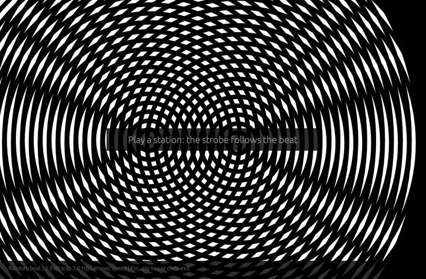

BigWave Radio: the free internet radio player for Windows, Mac and Linux
Thousands of stations from the community-powered radio-browser.info directory in a tiny native app, with one-click mood chips, your own star ratings, plugins and a MilkDrop-style visualiser.
Free and open source (MIT) · no account, no ads · written in Rust · a single ~8 MB download

Everything you want from a radio app
Tiny, fast and made for music lovers.
📻 Discover
Trending, popular and recently added stations, tag browsing and a world map with station bubbles for each country.
🎧 Mood chips
One click for Dance, Trance, Chill, Easy, 80s or 90s. Each mood searches several tags at once, and you can edit the mappings.
⭐ Your Stars
Rate stations 1 to 5 from the now-playing panel and find every station you rated in one list.
🔎 Music-first search
Working streams come first, near-duplicates are merged, and talk, news and sport stay hidden unless you want them.
✨ More like this · 🎲 Surprise me
Find stations like the one playing, weighted by your ratings, or get a well-rated pick within your moods.
🌌 Visions
A smooth MilkDrop-style visualiser with eight music-reactive scenes and crossfades.
⚡ Beat Strobe
Beat-synced strobe with Amiga interference rings, a photosensitivity warning and an app-enforced flash cap.
🧩 Plugins
Rhai scripts with permissions, hot reload and zip import, plus a community plugin hub.
🔄 Update checker
Check for updates from the About page, plus an optional quiet daily check. Nothing installs by itself.
Screenshots
Real captures of the app, no mock-ups.



Watch the wolf film
A lone wolf finds his pack, and BigWave Radio finds your station.

Or watch it on YouTube · more on the channel
Download BigWave Radio free
Latest release: v0.9.6 · all files and checksums · MIT licence
🪟 Windows
Windows 10 and later, 64-bit. Installer with tray icon and media keys, or a portable zip.
Installer (.exe)Portable .zip🐧 Linux
x86_64 and aarch64. Ubuntu/Debian, Fedora, Arch, or any distro with the AppImage.
AppImage (x86_64).deb.rpmArch .pkgThe macOS and Linux builds are brand new. Please tell us how they run on your machine. The Windows installer isn't code-signed yet, so if SmartScreen warns you, click “More info” then “Run anyway”.
Join the community
BigWave Radio is built with its users. Ideas, questions, bug reports and show-and-tell are all welcome.
🐞 Feedback
Tried it on your system? Tell us what works and what doesn't.
✅ It works for me Report a problem☕ Support it
It's free and always will be. If you enjoy it, a coffee keeps it going.
Buy me a coffee PayPalFind your station. Find your pack.
BigWave Radio is free for Windows, Mac and Linux.
Part of the Wave family: BigWave Radio · ChipWave Tracker · StreamWave